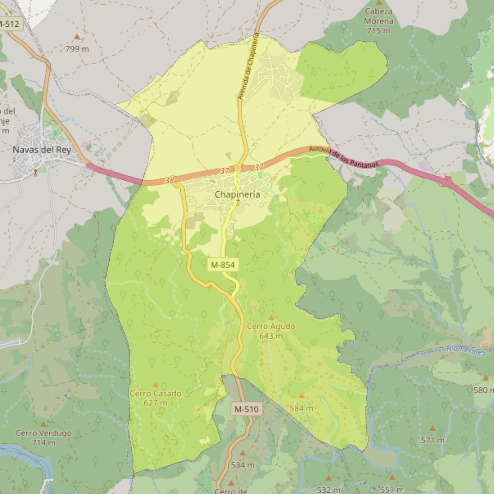

Concepción de Nuestra Señora

- Arciprestazgo
- San Martín de Valdeiglesias
- Población
- Chapinería
- Dirección postal
- Pza. del Palacio, 5
- Código postal
- 28694
- Extensión
- 25,65 km² (2.565 ha)
- Teléfono
- 918 941 105
- Correo electrónico
- concepcionns-chapineria@diocesisgetafe.es